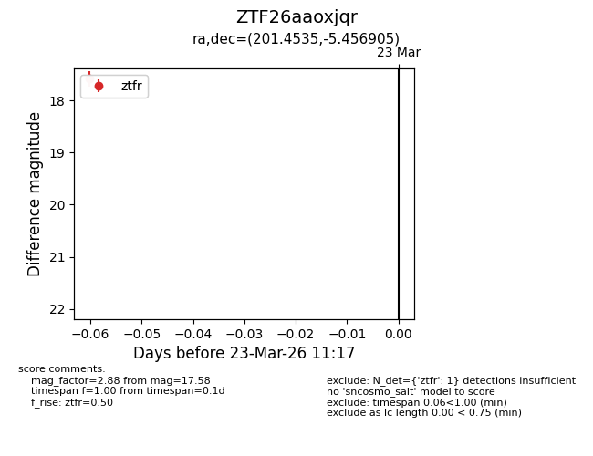
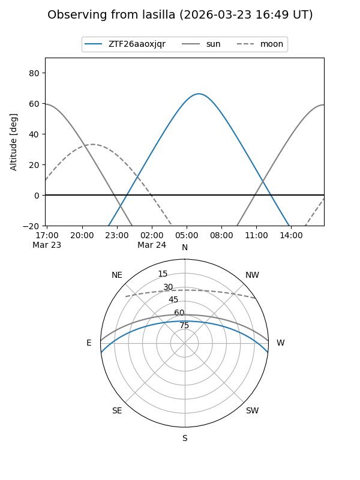
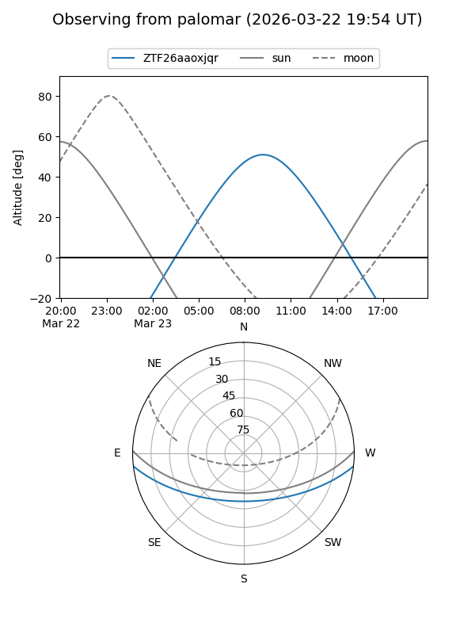

ZTF26aaoxjqr
Target ZTF26aaoxjqr at 2026-03-23 11:19
Aliases and brokers:
FINK: link
Lasair: link
ALeRCE: link
alt names
ZTF26aaoxjqr (ztf,fink_ztf)
Coordinates:
equatorial (ra, dec) = 201.4535,-5.45690
equatorial (HMS+DMS) = 13:25:48.83,-05:27:24.86
galactic (l, b) = (318.5131,+56.37136)
Flags:
Photometry:
last ztfr=17.58
1 ztfr detections
Lightcurve

Visibility


Additional plots